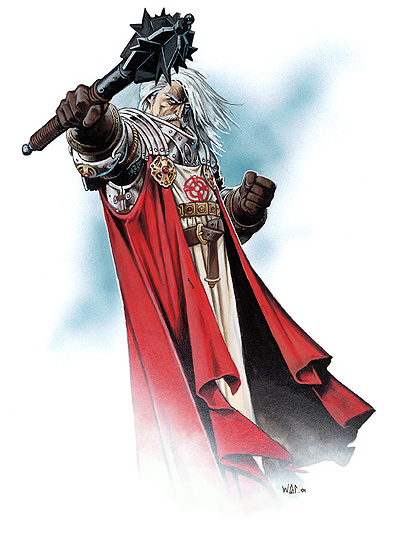

圣・库斯伯特（St.Cuthbert）

手持罚棍的圣・库斯伯特
中等神力
圣徽：红石星曜
居住位面：Arcadia
阵营：守序中立
神职：惩戒，常识，睿智，热情，诚实，真实，纪律
信徒：战士，武僧，法官，治安官
牧师阵营：守序善良，守序中立
领域：毁灭，秩序，保护，力量
偏好武器：硬头锤
惩戒之神圣・库斯伯特有着变化多端的外貌。他通常化装成一个普通的乡下人，或是一位白发白须，穿着全身甲的男人。他通常都带着他著名的硬头锤。
圣・库斯伯特以严格而准确的惩戒著称，他只惩罚那些违反了法律的人。因为邪恶生物往往比善良生物更多地明目张胆地违反法律和破坏秩序，因此圣・库斯伯特比较偏好善良阵营，尽管他自己严守中立。他可能过去是凡人（如同他的信徒所宣称的），但就算是真的，那也是很久以前的事情了，而且他大概是来自某个不知名的人类民族。
教义
无疑，用睿智，实践和明智三个字眼来形容圣・库斯伯特再合适不过了。在他的追随者的眼中，他所掌控的世界是秩序的世界，而他的追随者们则努力将秩序传播到世界各处，使世界各处的人们都能在秩序的指引下得到利益，在圣・库斯伯特的睿智的帮助下规律地生活。然而，对圣・库斯伯特信仰的怀疑与违背都是不可饶恕的，特别是对他的信徒而言。圣・库斯伯特经常劝诫他的追随者要努力将那些不相信秩序之力量的人拉入他的胸襟之下。圣・库斯伯特经常说，坦城，真实，实践，以及理性那是人生之中的最高美德。
神职人员与牧师
惩戒之神的牧师都是些严肃而坦承的人。他们绝对不会忍受着内心的不满与自己讨厌的人打交道，也厌恶那些心中毫无信仰的人。他们自幼接受战争艺术的训练并保持着优秀的体格。许多圣・库斯伯特的牧师从事着治安官，侦探，法官和赏金猎人的工作。
圣・库斯伯特的神殿一般都构建的壮丽而坚固。它们的正面墙壁或是入口处的石碑上一成不变地铭着惩戒之神的教义。这些词句都是很有启示性的，比如“混乱与邪恶只能在善良萎靡之处猖狂”，或者是些带有威胁性的语句，比如“固执只能给没有信仰的大脑带来致死的疾病”。
圣・库斯伯特
战士20级/牧师20级
中体型外界生物（守序）
神格等级：15
生命骰：20d8+160（外界生物）加20d10+160（战士）加20d8+160（牧师）（1000hp）
先攻调整值：+11（+7敏捷，+4精通先攻）
速度：60尺
防御等级：69（+7敏捷，+15神格等级，+28天生防御，+9偏转）
攻击加值：+5瓦解神圣秩序重型硬头锤 +79/+74/+69/+64近战；或者法术 +69近战接触或 +62远程接触。
伤害加值：+5瓦解神圣秩序重型硬头锤 1d8+43/19-20；或者使用法术
占据/威胁范围：5尺*5尺/5尺
特殊攻击：每日12次驱散不死生物，领域神力，超凡神格能力，类法术能力
特性：神格免疫，伤害减免 50/+4，火元素伤害抗力35，快速医疗 32，神术自发性施法，理解、交谈及阅读所有语言并直接于任何15里内的生命存在交谈，远程沟通，神祗国度，随意无误传送，随意位面旅行，SR67，神力光环（1500尺，DC34）
豁免调整值：坚韧 +37，反射 +34，意志 +44
能力值：力量 38，敏捷 24，体质 27，智力 24，感知 45，魅力 29
技能调整值：专注 +43，手艺（制造盔甲） +83，手艺（金属加工） +83，手艺（制造武器） +83，交涉 +48，知识（奥术） +63，知识（历史） +32，知识（皇室与贵族） +43，知识（宗教） +43，聆听 +60，专业（律师） +85，探知 +63，搜索 +49，察言观色 +100，辨识法术 +63，侦察 +60，使用魔法装置 +45，野外求生 +58，技能检定掷骰自然结果总是取20
专长：警觉，盲斗，顺势劈，格斗反射，神格威力，闪避，法术强效，专家，高级顺势劈，坚韧加强，高级法术渗透，精通冲撞，精通重击（重型硬头锤），精通卸除武器，精通先攻，精通绊摔，钢铁意志，法术极效，机动，猛力攻击，法术瞬发，抄录卷轴，法术渗透，跳跃攻击，法术定发，精通击毁武器，高级专家，追踪，武器专攻（重型硬头锤），武器专精（重型硬头锤），旋风攻击
神格免疫：属性伤害，属性吸取，酸，冷，即死效果，疾病，瓦解，电，能量吸取，心智影响效果，麻痹，毒，睡眠，震慑，变形，监禁，放逐。
超凡神格能力：毁灭打击，改变形态，改变现实，改变大小，区域神力护盾，神力祝福（感知），神力快速医疗，神力护盾，天神下凡，神力冲击波，神力技能专攻（察言观色），神力护盾，神力风暴，神力武器专攻（重型硬头锤），神力武器专精（重型硬头锤），额外领域（毁灭），增强法术抗力，真知力量。
领域神力：每日15次威力打击（+4攻击加值，+20伤害加值于一件武器的一次攻击上）；施展秩序领域法术时，施法者等级加1；每日15次保护结界（结界内对象在下次豁免检定中获得+20的抗力加值，最大持续时间1小时）；每日17次力量专长（持续1轮得到+20力量增强加值）
类法术能力：圣・库斯伯特可以相当于施法者等级为26级使用秩序领域类法术能力，以相当于施法者等级为25使用其他类法术能力。类法术能力的基本豁免DC为34+法术等级。Antimagic field,Bigby's clenched fist,Bigby's crushing hand,Bigby's grasping hand,bull's strength,calm emotions,circle of doom,contagion,dictum,disintegrate,dispel chaos,earthquake,endure elements,harm,hold monster,implosion,inflict critical wounds,inflict light wounds,magic circle against chaos,magic vestment,mind blank,order's wraht,prismatic sphere,protection from chaos,protection from elements,repulsion,righteous might,sanctuary,shatter,shield of law,shield other,spell immunity,spell resistance,stoneskin,summon monster IX（仅限以秩序领域法术施展）。
每日牧师神术：6/11/10/10/10/10/8/8/8/8；基础DC=27+法术等级
财产：圣・库斯伯特拥有一把名为“库斯伯特之锤”的 +5瓦解神圣秩序重型硬头锤，它是神器。它可以随意使用searing light的类法术能力（施法者等级为20）
其他神格能力
作为一个中等神力，圣・库斯伯特在任何掷骰中自动取20，渥利达马拉在攻击检定和豁免检定掷骰自然值出1时，并不视作必然失败，而是视作普通失败。他是不朽的。
感知：圣・库斯伯特可以看见，听见，触摸和嗅到15哩的距离。作为一个标准动作，他能够感知到任何动物，他的信徒，圣迹，与他有关的物体和任何他的名字在一个小时内被说出的地点周围15哩内的一切。他能够立即将他的感知延伸到10个地方。他立即能够在2个地方阻止神格等级等于或者小于他的神的感知力量，时间最长可达15个小时。
神职感知：圣・库斯伯特可以在事情的发生前15周，发生后15周，或发生时立刻感知到任何与惩戒与复仇有关的事情。他同样也能感知任何人自愿地冒着巨大的危险说出的任何真话。
自动动作：圣・库斯伯特能够以一个自由动作使用其手艺（制造盔甲），手艺（金属加工），手艺（制造武器），知识（奥术），知识（历史），知识（皇室与贵族），知识（宗教），或者专业（律师）等技能，只要该项任务的DC在25或者更低。他每轮能够完成10个类似的自由动作。
创造魔法物品：圣・库斯伯特能够创造出任何魔法武器，以及任何能够揭露真相的魔法物品，比如medallion of thought,lenses of revealing,potion fo truth，只要物品的交易价格不超过200000GP。
化身
圣・库斯伯特的化身的外貌千变万化，如同他本人一样。他派遣化身去监视人们的信仰，或是去揭露某些真相。
圣・库斯伯特的化身：如同圣・库斯伯特的本体，但以下除外：神格等级为7；防御等级53（接触33，措手不及46）；攻击加值 +71/+66/+61/+56近战或法术 +61近战接触或 +54远程接触；特性：伤害减免 42/+4，火元素伤害力 27，SR59，神圣光环（700尺，DC26），豁免调整值 坚韧 +29，反射 +26；所有技能调整值减8
超凡神格能力：改变大小，神力冲击波，神力快速医疗，神力技能专攻（察言观色），神力武器专攻（重型硬头锤），额外领域（毁灭），增强法术抗力，真知力量。
类法术能力：施法者等级为17；豁免检定DC为26+法术等级